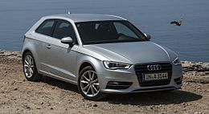

Audi A3
Audi A3 je kompaktni automobil koji proizvodi nemačka fabrika automobila Audi. Proizvodi se od 1996. godine trenutno u trećoj generaciji. Osvojio je nekoliko nagrada, a najvažnija je nagrada iz 2014. kada je treća generacija proglašena za Svetski automobil godine.
Istorijat
Prvi put se pojavio 1996. godine na salonu automobila u Frankfurtu. Model A3 je označio ulazak nemačkog premijum brenda u kategoriju kompaktnih hečbek automobila. Kasnije su krenuli i Mercedes i BMW sa razvojem automobila u nižoj srednjoj klasi. Upravo Mercese A klase i BMW serije 1 su mu najveći konkurenti. Deli zajedničku osnovu sa Folksvagen golfom, Škodom oktavijom i Seat leonom. Prve dve generacije su bile zasnovane na Volkswagen Group A platformi, a treća na Volkswagen Group MQB platform.
Trenutno se prodaje na preko sto tržišta u svetu. Proizvodi se u Ingolštatu u Nemačkoj, u Đeru u Mađarskoj i u gradu Fošan u Kini za tamošnje tržište. Otkako je predstavljen, prodano je preko četiri miliona jedinica.
Prva generacija, tip 8L (1996–2003)
 Audi A3 označava povratak Audija u proizvodnju manjih automobila nakon propasti Audija 50 1978. godine. Bio je prvi model Folksvagen grupacije koji je koristio PQ34 ili A4 platformu, imajući sličnosti sa golfom četvorkom, koja dolazi godinu dana kasnije. U početku je bio dostupan samo sa troje vrata, predstavljajući sportski imidž u odnosu na golfa, sa pogonom na prednjim ili na sva četiri točka. Motori su bili redni četvorocilindrični i poprečno postavljeni. Nakon Audija A4, A3 je drugi model koji koristi pet ventila po cilindru.
Audi A3 označava povratak Audija u proizvodnju manjih automobila nakon propasti Audija 50 1978. godine. Bio je prvi model Folksvagen grupacije koji je koristio PQ34 ili A4 platformu, imajući sličnosti sa golfom četvorkom, koja dolazi godinu dana kasnije. U početku je bio dostupan samo sa troje vrata, predstavljajući sportski imidž u odnosu na golfa, sa pogonom na prednjim ili na sva četiri točka. Motori su bili redni četvorocilindrični i poprečno postavljeni. Nakon Audija A4, A3 je drugi model koji koristi pet ventila po cilindru.
Dve godine nakon premijere, 1998. godine, usledila je verzija sa pogonom na sva četiri točka zvana quattro verzija. 1999. predstavljena je varijanta sa petoro vrata. Iste godine predstavljena je sportska varijanta S3, koja je imala 1.8 litarski četvorocilindrični turbobenzinac od 210 KS.
 Redizajnom iz 2000. godine, A3 je dobio moderniji izgled prednjih i zadnjih svetala, kao i snažnije motore. Prva generacija je zamenjena u Evropi 2003. godine, a proizvodnja u Brazilu je trajala do 2006. godine.
Redizajnom iz 2000. godine, A3 je dobio moderniji izgled prednjih i zadnjih svetala, kao i snažnije motore. Prva generacija je zamenjena u Evropi 2003. godine, a proizvodnja u Brazilu je trajala do 2006. godine.
Druga generacija, tip 8P (2003–2012)
Druga generacija je predstavljena 2003. godine, koja je kao i prethodna usko povezana sa golfom, ali petom generacijom. A3 sa golfom 5 deli mnoge komponente. Koristi PQ35 platformu kao i golf V, oktavija II, leon II i Audi TT druge generacije. Karoserijski postoje tri varijante, sa troja vrata, od septembra 2004. pojavljuje se sa petoro vrata kao sportback i kao novina od marta 2008. na tržištu se pojavljuje kabriolet sa platnenim krovom sa četiri sedišta.
 U ovoj generaciji su otklonjeni tehnički problemi koji su pratili prethodnu. Preuzima sve osobine prve generacije kao što su visok kvalitet izrade, visoku bezbednost i odlične motore. Dva puta je redizajniran, 2005. i 2008. godine. Prvi put je redizajn urađen čisto kozmetičke prirode, najprepoznatljivija je velika rešetka hladnjaka. Kod drugog redizajna osvežen je prednji deo automobila i unutrašnjost.
U ovoj generaciji su otklonjeni tehnički problemi koji su pratili prethodnu. Preuzima sve osobine prve generacije kao što su visok kvalitet izrade, visoku bezbednost i odlične motore. Dva puta je redizajniran, 2005. i 2008. godine. Prvi put je redizajn urađen čisto kozmetičke prirode, najprepoznatljivija je velika rešetka hladnjaka. Kod drugog redizajna osvežen je prednji deo automobila i unutrašnjost.
Godine 2003. na Euro NCAP testovima sudara, dobio je četiri od mogućih pet zvezdica za bezbednost putnika i tri za bezbednost dece.Sportska verzija S3 predstavljena je 2006. godine. Imao je 2.0 litarski TFSI benzinski turbomotor od 265 KS i kvatro pogonom (pogon na svim točkovima, ali samo u određenim situacijama). 2008. pojavljuje se verzija S3 sportback.
Treća generacija, tip 8V (2012–)
 Treća generacija je predstavljena marta 2012. godine na salonu automobila u Ženevi, a u prodajne salone je stigla septembra iste godine, kada je predstavljen i model sa petoro vrata – sportback. Godinu dana kasnije po prvi put pojavljuje se A3 u sedan verziji i serijski model sa pogonom na metan A3 g-tron. Još jedan novitet je predstavljen 2014. godine u vidu modela e-tron, odnosno plag-in hibridna verzija, koja deli mehaniku i elektroniku sa golfom GTE i pasatom GTE. Na sajmu u Parizu 2016. godine A3 sedan dobio je najjaču ekstremnu verziju RS3 sedan. Poseduje jedan od najsnažnijih petocilindričnih motor na svetu sa 2.5 litara zapremine i 400 KS.
Treća generacija je predstavljena marta 2012. godine na salonu automobila u Ženevi, a u prodajne salone je stigla septembra iste godine, kada je predstavljen i model sa petoro vrata – sportback. Godinu dana kasnije po prvi put pojavljuje se A3 u sedan verziji i serijski model sa pogonom na metan A3 g-tron. Još jedan novitet je predstavljen 2014. godine u vidu modela e-tron, odnosno plag-in hibridna verzija, koja deli mehaniku i elektroniku sa golfom GTE i pasatom GTE. Na sajmu u Parizu 2016. godine A3 sedan dobio je najjaču ekstremnu verziju RS3 sedan. Poseduje jedan od najsnažnijih petocilindričnih motor na svetu sa 2.5 litara zapremine i 400 KS.
A3 treće generacije je prvo vozilo u grupaciji koje koristi modularnu Volkswagen Group MQB platformu. Ima agresivniji izgled od prethodne generacije, zahvaljujući novom dizajnu farova i maske hladnjaka. Od prethodne verzije je širi za 12 mm, a međuosovinsko rastojanje je veće za 23 mm. Kapacitet prtljažnog prostora je 365 litara kod verzije sa troje vrata dok u sportback verzji iznosi 380 litara. Zadnji deo je potpuno izmenjen.
Na Euro NCAP testovima sudara 2012, dobio je maksimalnih pet zvezdica za bezbednost.Krajem 2016. urađen je redizajn, najvažnije stilske promene odnose se na prednji deo vozila.
Od pogonskih jedinica, ugrađuju se benzinski motori od 1.2 TFSI (105 KS), 1.4 TFSI (125 i 150 KS), 1.8 TFSI (180 KS), 2.0 TFSI (223 i 300 KS) i 2.5 TFSI (367 KS) i dizel motori od 1.6 TDI (105 KS) i 2.0 TDI (150 i 184 KS).